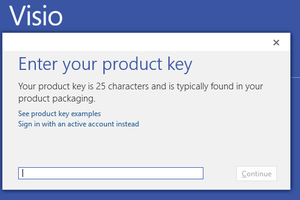

What is telecommunications? Note: do not only rely on the book for the answer. Consult Lynda.com and Wikipedia.
(25) 1. Briefly state what the practice and study of ICT-Information and Communications Technology, is about.
Fill in the seven layers of the OSI (Open Systems Interconnection) model in the spaces below. (25) 2. Layer number 7: (25) 3. Layer number 6: (25) 4. Layer number 5: (25) 5. Layer number 4: (25) 6. Layer number 3: (25) 7. Layer number 2: (25) 8. Layer number 1:
Fill in the 5 layers of the TCP/IP (Transmission Control Protocol/Internet Protocol) suite in the table below: (25) 9. Layer number 5: (25) 10. Layer number 4: (25) 11. Layer number 3: (25) 12. Layer number 2: (25) 13. Layer number 1:
Investigate how convergence applies to the telecommunications industry, then briefly answer the following questions. (50) 14. With respect to the various technologies: (50) 15. With respect to wireless technologies:
Using the TCP/IP suite list the progression of messages as the 'Get File' command moves from your computer, through routers, to the server 'classes' and back. Assume it travels from your computer, through 2 routers, then to the web server. Hint: remember the TCP/IP suite from the question above. (50) 16. List messages: (50) 17. List two characteristics that distinguish a personal area network from other types of networks:
Open Windows File Explorer and navigate to the folder with your username for this class, located on the T: drive. (50) 18. Briefly describe the contents of this folder.
Leave File Explorer visible, and now open a browser window, and navigate to your website homepage by using a url (web adderss) of the following format: https://classes.winona.edu/20203000039/<username>/ (50) 19. Briefly explain why the contents of this folder look the same as those in the previous question..
https://classes.winona.edu/20203000039/<username>/
Open another Windows File Explorer instance and try to establish an FTP connection to your folder on class storage. If you are off-campus, make sure you have established a VPN connection first. Note that it may take a minute or more for a message to appear. You will be making a screen shot of this message. Use the following format: ftp://classes.winona.edu/20203000039/
ftp://classes.winona.edu/20203000039/
Reflect on what you just did using Windows File Explorer and your web browser. (50) 20. Briefly explain why there are at least three ways to view files and folders on a network.
(50) 21. Use the Snipping Tool to make a screen shot of the message you received when trying to establish the FTP connection.. Save the screen shot as "Ex1" in your ' ' folder. You will be combining screen shots from several exercises at the end of this assignment, just as you did in Formative00-PDF File Creation.
Study the list of eleven (11) types of general network connections presented below.
Computer Networks – Basic Connections a. Terminal/microcomputer-to-mainframe computer connections b. Microcomputer-to-local area network connections c. Microcomputer-to-Internet connections d. Local area network-to-local area network connections e. Personal area network-to-workstation connections f. Local area network-to-metropolitan area network connections g. Local area network-to-wide area network connections h. Wide area network-to-wide area network connections i. IOT sensor-to-local area network connections j. Satellite and microwave connections k. Wireless telephone connections
(50) 22. List which of the eleven network connections listed above most likely involve a connection to the Internet:
List at least four network applications and the type of network connection used, (see list above) at Winona State University. Consider applications that you use to register for classes, participate in classes, submit homework, and apply for jobs. (50) 23. Network application 1: (50) 24. Network application 2: (50) 25. Network application 3: (50) 26. Network application 4: (50) 27. Which, if any, of the four applications you listed, use a local area network? (50) 28. Which, if any, of the four applications you listed, use a wide area network?
Visit the Microsoft Imagine website. Download and install Microsoft Visio Professional 2016, 32 bit version. Do not install 64 bit, it will cause you a LOT of problems. Note that it is a large, 2 GB, download. It will download as an .iso file, which you must mount using Windows File Explorer. Once mounted, run the setup.exe file. Launch Visio, and enter the Product Key from the Microsoft Imagine website  Then use Visio to draw a network diagram or map of these applications and their connections. Refer to Lynda.com or the internet for assistance using Visio. Make sure to label all 4 applications, and show the corresponding server. Also make sure to use, at a minimum, firewalls, switches and routers, as appropriate. Save the file, and then use the Snipping tool to make a screen shot. (100) 29. Save the screen shot of the Visio diagram "Ex2" in your ' ' folder. You will be combining screen shots from several exercises at the end of this assignment, just as you did in Formative00-PDF File Creation.
Use a web browser to verify that you have published your website to https://classes.winona.edu/... Check that your name, StarID, email, class, semester, section and all of your answers are correct and visible. From the menu choose File>Print... and using "Microsoft Print to PDF" save a copy of this assignment as a .pdf file in your ' ' folder.
(50) 30. Save your file 'WebPage.pdf' to the ' ' folder.
Create one .pdf (portable document format) file from the screen shots that you have taken by following these steps.
(50) 31. Save your file 'ScreenShots.pdf' to the ' ' folder.
Use PDFill to merge the WebPage.pdf file with the ScreenShots.pdf file, and save it as 'Summative01.pdf' in ' ' folder.
(50) 32. Upload your file 'Summative01.pdf' to the D2L 'Summative01' Assignment folder.
Use a browser to view your completed and published website at: https://classes.winona.edu/... Ensure that you have linked this assignment on your home page. Note that your screen shots do not have to be completed to perform this step.